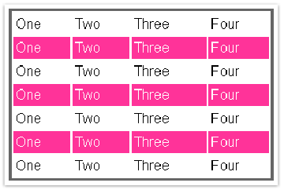

Автор: Dmitrii 'Mamut' Dimandt
Источник: RSDN Magazine #1-2007
Тенденция последних лет в создании веб-приложений – использование функциональности, которая до этого была доступна только прикладным программам. Это и всевозможная анимация, и общение с сервером без перезагрузки страницы, и использование «не веб»-элементов (деревья, табы, сплиттеры и многое другое).
Над самим термином «клиентское веб-приложение» можно смеяться, о нем можно дискутировать, но факт остается фактом – уже появились решения, которые кроме как «веб-приложением» назвать нельзя (взять тот же Gmail, например). И теперь наша задача, как разработчиков, взять на вооружение все, что позволит создавать новые приложения, которые соответствуют новым, пока еще правда сырым, стандартам, объединяемым звучным названием «Веб 2.0».
Большая часть технологической стороны новых веб-приложений опирается на предсказуемость поведения современных браузеров. Все наиболее распространенные браузеры разве что не препарированы энтузиастами. Такие копания во внутренностях позволяют этим же энтузиастам создавать разнообразный инструментарий для работы над веб-приложениями в целом, так и над каждой веб-страницей в отдельности. Но так как в заголовок статьи вынесено слово «Javascript», то и говорить мы будем о нем.
Веб-приложения стремятся приблизиться к функциональности настольных приложений. Но так как ключевые веб-технологии (HTML и CSS) являются статическими, то вся необходимая функциональность реализуется с помощью Javascript.
Существуют десятки, если не сотни, библиотек, позволяющих реализовывать такие вещи, как красочные графические эффекты и анимацию, перетягивание и сортировку предметов, общение с сервером без перезагрузки страницы и многое, многое другое. Большинство таких библиотек отличает некоторая монструозность и, зачастую, сложность в использовании. Особенно в сравнении с библиотекой, о которой пойдет речь в этой статье.
Начну сразу с интересного, хоть и непрактичного примера. Нам необходимо раскрасить таблицу в таком стиле:

Предполагается, что у нас есть CSS-файл, в котором определен класс «odd». Все, что нам нужно сделать, – это наделить нечетные строки в таблице эти классом. Для начала – решение на чистом Javascript:
var tables = document.getElementsByTagName("table");
for ( var t = 0; t < tables.length; t++ ) {
var rows = tables[t].getElementsByTagName("tr");
for ( var i = 1; i < rows.length; i += 2 )
if ( !/(^|s)odd(s|$)/.test( rows[i].className ) )
rows[i].className += " odd";
}
Теперь – решение, использующее одну из самых популярных на сегодняшний день библиотек, Prototype:
$$("table").each(function(table){
Selector.findChildElements(table, ["tr"])
.findAll(function(row,i){ return i % 2 == 1; })
.invoke("addClassName", "odd");
});
Ну а теперь – jQuery:
$("tr:nth-child(odd)").addClass("odd");
Как видно из этого примера, библиотека jQuery позволяет находить простые и изящные решения для, казалось бы, сложных задач.
Ключом к пониманию работы jQuery является функция $(). Эта функция, так или иначе, вызывается всеми методами jQuery. Как будет показано дальше, со стороны эта функция выглядит действительно магической.
Определение функции $ можно увидеть в листинге 1. Вне зависимости от параметров, переданных в функцию, знак доллара вернет список объектов, над которым уже определены все доступные jQuery-функции (а их немало). Это позволяет работать с любыми объектами – уже существующими на странице, созданными динамически или полученными через AJAX – так, как будто это одни и те же элементы, уже существующие на странице.
Листинг 1. Определение функции $():
$(html)
$(elems)
$(fn)
$(expr, context)
Разберемся с каждым поподробнее.
$(html)
Позволяет создать html-элементы «на лету» из «чистого» HTML. Например, можно создать элемент div, содержащий параграф с текстом «Ба-бах!» и добавить его к элементу с id="body" таким образом:
var my_div = $("<div><p>Ба-бах!</p></div>");
my_div.appendTo("#body");
Или еще короче:
$("<div><p>Ба-бах!</p></div>").appendTo("#body");
Элемент до отработки скрипта:
<div id="body"></div>
Элемент после отработки скрипта:
<div id="body"><div><p>Ба-бах!</p></div></div>
$(elems)
Позволяет «прицепить» всю функциональность jQuery к уже существующим элементам страницы (а именно, к элементам из объектной модели документа, из DOM). Примеры:
$(document.body).css( "background-color", "black" );
$( myForm.elements ).hide();
$(expr[, context])
Это самая магическая форма функции $, и наиболее часто используемая. Первый, обязательный, параметр – это выражение, которое позволит jQuery найти элемент на странице. Второй, необязательный, параметр указывает, где искать этот элемент (по умолчанию jQuery будет искать по всей странице).
Найдем все элементы p, находящиеся внутри всех элементов div на странице:
$("div > p");
Наш документ:
<p>one</p> <div><p>two</p></div> <p>three</p>
Результат:
[ <p>two</p> ]
Найдем все радиокнопки в первой форме на странице:
$("input:radio", document.forms[0]);
Найдем все элементы div в XML, что прислан с сервера с помощью технологии AJAX:
$("div", xml.responseXML);
«Но как же так?» - воскликнет читатель. Как это все работает?
Дело в том, что в jQuery реализован очень интересный механизм поиска элементов, использующий CSS и Xpath. То есть, для нахождения требуемого элемента вы можете воспользоваться как механизмом селекторов CSS, так и запросами по документу в стиле Xpath. Все еще непонятно?
CSS в версиях 1-3 предлагает разработчику богатые возможности оформления страниц (как минимум, теоретически). Например, чтобы пометить элементы div в параграфах с классом «highlight» красным цветом, разработчик может составить такую конструкцию:
p.highlight > div
{
color: #F00;
}
Вспомните пример с раскраской таблицы. Согласно CSS 3 раскрасить таблицу в зебру можно так:
table tr:nth-child(odd)
{
background-color: magenta;
}
Вспомним тогда еще раз, как мы раскрасили таблицу с помощью jQuery:
$("tr:nth-child(odd)").addClass("odd");
Мы использовали селекторы CSS для нахождения нужных нам элементов и манипуляций над ними!
Практически все селекторы из CSS 1-3 можно использовать для нахождения элементов на странице. В конце статьи приведен краткий справочник по доступным селекторам, а пока рассмотрим примеры.
Найдем элемент с id="unique":
$("#unique");
// аналог из CSS:
// #unique {...}
Найдем все элементы A, имеющие класс «external» (то есть все )
$("a.external");
// аналог из CSS:
// a.external {...}
Найдем все нечетные элементы div, находящиеся внутри элементов div с классом news-item, который находится внутри элемента div с id="outer"
$("#outer > div.news-item > p:nth-child(odd)");
Как видно, фантазия разработчика ограничена только возможностями CSS. Когда же возможностей CSS не хватает, на помощь приходит XPath.
Согласно определению из Википедии, XPath (XML Path Language) является языком для обращения к частям XML-документа. Вспомним, что HTML, или вернее, XHTML, является подмножеством XML, и станет понятно, что практически не существует причин, по которым с помощью XPath нельзя было бы обращаться к частям HTML-документа. Вернее, их нет для jQuery, так как эта библиотека поддерживает довольно большое подмножество XPath (более полная информация приведена во врезке) и лихо объединяет его с некоторыми селекторами CSS для создания невероятно гибкого механизма поиска элементов на странице.
Найдем все элементы P, которые содержат ссылку
$("p[a]");
Найдем все элементы A, которые содержат атрибут rel, равный "nofollow":
$("//a[@rel='nofollow']");
Найдем все видимые элементы LI внутри элемента UL
$("ul/li:visible"); // XPath + селектор
// или
$("ul > li:visible"); // CSS + селектор
Как видите, если вы знаете, какой элемент необходимо выбрать, jQuery позволит это сделать. Например, в одном из текущих проектов мы используем вот такой код:
// Находим необходимую нам радиокнопку и эмулируем нажатие на нее
$("input[@value='1']:radio").click();
// Находим необходимую нам опцию в списке и выбираем ее
// (устанавливаем значение атрибута selected равным "selected"):
$("option[@value='1']").attr("selected", "selected");
Большинство (если не все) библиотек JavaScript часто использует событие window.onload. Это событие вызывается после того, как документ полностью загрузился в окно браузера. Это значит, что вызываемый в обработчике этого события код не сработает, пока не загрузятся все изображения, флэш-баннеры и видеоролики на странице.
jQuery предлагает решение этой проблемы. У разработчика есть возможность выполнить свой код в тот момент, когда доступна объектная модель документа, то есть когда браузер уже получил исходный код страницы полностью, но, возможно, еще не подгрузил различное мультимедийное содержимое (рисунки, видео, флэш).
Возможность выполнить такой код предлагается методом .ready():
$(document).ready(
function() { /* ... */}
);
или его сокращенным вариантом, $(fn):
$(
function(){/* ... */}
);
В качестве аргумента в .ready() передается функция, которая будет выполнять все необходимые действия.
Пример.
$(document).ready(
function()
{
// добавим ко всем ссылкам на странице некий текст
$("a").append("<span>(opens in new window)</span>");
}
);
Пример.
$(document).ready(init);
function init()
{
// находим все элементы Р с классом highlight и задаем им другой фон
$("p.highlight").css("background-color", "#000");
// естественно, можно выполнять любые действия
alert('Функция init()');
// вызывать другие функции
anotherFunc();
// манипулировать объектами в документе
document.getElementById("some_id");
}
Пример.
// Используем кратую форму записи
$(
function()
{
alert('документ готов!');
}
)
СОВЕТ
Я рекомендую использовать длинную форму записи, то есть $(document).ready(),чтобы избежать неявных ошибок в коде.
jQuery предлагает разработчику большое количество методов для манипуляции элементами документа и их свойствами. Кратко рассмотрим некоторые из этих методов, а также некоторые особенности работы с ними.
| append(content)/prepend(content) | Добавить переданный элемент или выражение в конец/в начало выбранного элемента. |
| appendTo(expr)/prependTo(expr) | Добавить выбранный элемент в конец/в начало переданного элемента. |
| attr(name) | Получить значение атрибута. |
| attr(params) | Установить значение атрибутов. Атрибуты передаются в виде {ключ1:значение1[, ключ2:значение2[, …]]} |
| attr(name, value) | Установить значение одного атрибута. |
| css(name)/css(params)/css(name, value) | Получить/установить значение отдельных параметров CSS. Аналогично функции attr(). |
| text()/text(val) | Получить/задать текст элемента. В случае ввода текста специальные символы HTML заменяются символьными примитивами (entities, например, знак ">" будет заменен >). |
| empty() | Удалить все подэлементы текущего элемента. |
В следующих примерах мы будем работать со следующим HTML-кодом:
<div id="my-div">
<a href="http://google.com/" id="my-link">Ссылка</a>
</div>
Пример.
$("#my-div").html(); // Вернет <a href="#" id="my-link">Ссылка</a>
Пример.
$("#my-link").attr("href"); // Вернет http://google.com/
Пример.
$("#my-div").append("<strong>Полужирный текст</strong>");
// или
$("<strong>Полужирный текст</strong>").appendTo($("#my-div"));
HTML станет таким:
<div id="my-div">
<a href="http://google.com/" id="my-link">Ссылка</a>
<strong>Полужирный текст</strong>
</div>
Пример.
$("#my-div").empty();
HTML станет таким:
<div id="#my-div"></div>
Пример.
$("#my-div").text("<a>Якорь</a>");
HTML станет таким:
<div id="#my-div"><a>Якорь</a></div>
Пример.
$("#my-div").css(
{
backgroundColor: "#F00",
color: "#00F"
}
);
HTML станет таким:
<div id="my-div" style="background-color: #F00; color: #00F">
<a>Якорь</a>
</div>
В последнем примере обратите внимание, что для сложносоставных свойств CSS вроде background-color, font-weight и прочих используются их эквиваленты из Javascript (backgroundColor, fontWeight и т.п.).
Главная особенность большинства методов jQuery – это возможность связывать их в цепочки. Методы, манипулирующие элементами документа, обычно возвращают эти объекты для дальнейшего использования, что позволяет писать примерно следующее:
Пример.
// Заполняем скрытый элемент <div id="divEdit"></div> текстом и показываем его
$("#divEdit").html(response).show();
Пример.
// найти <select id="my_select">...</select>
var sel = $("#my_select");
// добавляем к нему <option value="1">Пример опции</option>
$("<option></option>") // создаем требуемый элемент
.attr("value", 1) // устанавливаем значение одного из его атрибутов
.html("Пример опции") // записываем в него текст
.appendTo(sel); // прикрепляем к уже существующему элементу
Таким образом, можно легко описать все действия, происходящие с выбранным элементом, не затрудняясь введением большого количества временных переменных.
Некоторые действия в jQuery позволяют вернуться на предыдущий уровень в иерархии тегов. Например:
HTML
<p><span>Hello</span>, how are you?</p>
Javascript
$("p").find("span");
Результат
<span>Hello</span>
Но что произошло вначале? Сначала был найден элемент P и только потом внутри него был найден элемент SPAN. Что же делать, если мы хотим продолжить работу с коллекцией элементов P? Для этого jQuery предлагает возможность вернуться к предыдущему уровню с помощью метода end(). Например:
$("p").find("span").html("Ahoy").end().append("<p>I'm fine<p>");
Что здесь происходит? Пройдемся по всем этапам:
| Код | Текущая коллекция элементов |
| $("p") | [<p>..</p>] |
| .find("span") | [<span>..</span>] |
| .html("Ahoy") | [<span>..</span>] |
| .end() | [<p>..</p>] |
| .append(...); | [<p>..</p>] |
<p><span>Ahoy</span>, how are you?<p>I'm fine</p></p>
Пример.
$("body") // 1
.find("div").css("background-color", "green") // 2
.end() // 3
.find("span").css("border", "1px solid #F00") // 4
.end() // 5
.css("background-color", "#000");
Предыдущий код эквивалентен следующему:
var body = $("body");
$("div", body).css("background-color", "green");
$("span", body).css("border", "1px solid #F00");
body.css("background-color", "#000");
ПРИМЕЧАНИЕ
Метод end() может как упростить, так и усложнить код, поэтому его использование остается на совести разработчика.
Функция $() возвращает коллекцию элементов. Так, $("p") вернет массив всех элементов <p>, какие только могут присутствовать на странице (или пустой массив, если таких элементов не существует). Одним из условий работы большинства функций jQuery является непременная обработка всех элементов в возвращаемой коллекции. Например:
Цвет всех ссылок на странице станет зеленым:
$("a").css("color", "green");
Ко всем элементам div с классом test будет добавлен новый элемент:
$("div.test").append("<span>Тестовый элемент</span>");
Но иногда необходимо обратиться к индивидуальным элементам возвращаемой коллекции.
Возвращаемая функцией $() коллекция является «псевдо»-массивом DOM-элементов. Поэтому можно обратиться к индивидуальным элементам по их индексу:
$("p")[0].className = "test";
Иногда, правда, необходимо обратиться непосредственно к массиву DOM-объектов, скрытых внутри «псевдо»-массива, которым является объект jQuery. Для этого используется функция get():
$("p"); // Получили объект jQuery
$("p").get(); // Получили соответствующую коллекцию DOM-элементов
Более того, метод get позволяет обращаться непосредственно к индивидуальным элементам коллекции:
$("a").get(0); // Получили первую из всех ссылок на странице
Пример использования на практике:
HTML
<select id="my-select">
<option>Option 1</option>
<option>Option 2</option>
</select>
Javascript
$("#my-select").get(0).selectedIndex = $("#my-select").get(0).options.length – 1;
Как видите, здесь мы напрямую манипулируем свойствами объекта (выпадающего списка).
Иногда нужно пробежаться по всем элементам коллекции и выполнить над ними какие-то действия. Для этого нам понадобится функция each. Эта функция принимает в качестве аргумента другую функцию. each() работает в контексте найденных элементов и поэтому каждый раз, когда выполняется переданная ей функция, в этой функции доступна переменная this, указывающая на соответствующий DOM-элемент.
Пример.
$("p").each(
function()
{
// внутри функции this указывает на текущий DOM-элемент
alert(this.innerHTML);
}
);
В этом примере мы находим все элементы p на странице и для каждого из этих элементов вызываем функцию, которая показывает его содержимое.
Вспомните, что функция $ принимает в качестве параметра любые DOM-элементы. Поэтому alert можно было записать и так: alert($(this).html()). Такой способ, правда, заставляет jQuery производить лишние вычисления, чтобы найти соответствующий элемент, но и он имеет право на существование.
Функция, передаваемая в метод each(), может принимать на вход один аргумент, который является индексом текущего элемента в коллекции. Для иллюстрации перепишем самый первый пример в статье с помощью each(). Нам необходимо раскрасить все нечетные строки в таблице в другой цвет. Если у нас есть некая таблица с id="zebra" и CSS-класс «odd» для нечетных строк, то можно написать так:
$("#zebra tr").each(colorize); // передаем в each функцию colorize
function colorize(index)
{
if(index % 2 == 1) // index является индексом текущего элемента в коллекции
$(this).addClass("odd");
}
Грамотная манипуляция свойствами элементов на странице позволила создателям Javascript-библиотек создавать визуальные эффекты, которые раньше были возможны только при использовании технологии Flash. Это и плавное появление, и скрытие объектов, плавное изменение различных свойств этих объектов (фонового цвета, размеров), реализация всевозможных элементов интерфейса вроде сплиттеров, деревьев, перетягиваемых объектов и сортируемых списков.
В базовой поставке jQuery предлагает лишь ограниченный набор таких эффектов. Остальные эффекты реализуются при помощи модулей расширения (о которых речь пойдет ниже).
Ключевой функцией, на которой базируются все остальные, является функция animate:
animate(params, speed, easing, callback);
Здесь:
Пусть у нас есть элемент div с каким-нибудь текстом. Мы хотим скрыть этот текст, заменить новым, и показать обновленный текст.
$("#mydiv")
.animate({height: "hide"}, 300)
.text("Новый текст")
.animate({height: "show"}, 300);
ПРИМЕЧАНИЕ
Метод animate манипулирует только теми атрибутами, для которых можно выставить числовое значение (такие как height, weight, opacity, top и т.п.).
Метод animate является основой большинства, если не всех, эффектов jQuery и плагинов. Например, jQuery предлагает следующие методы для показа и скрытия элементов:
speed – скорость в миллисекундах или одно из "slow" (600 миллисекунд) или "fast" (200 миллисекунд);
callback – функция, которая будет вызвана после выполнения анимации.
Рассмотрим, например, реализацию функции show:
show: function(speed,callback){
// находим в переданной нам коллекции скрытые элементы (см. врезку)
var hidden = this.filter(":hidden");
// если нам передана скорость, то вызываем метод animate
if(speed)
{
hidden.animate(
{
height: "show",
width: "show",
opacity: "show"
},
speed,
callback
)
}
else
{
// иначе просто проходим по коллекции элементов и показываем их,
// меняя стиль display с none на block
hidden.each(
function()
{
this.style.display = this.oldblock ? this.oldblock : "";
if ( jQuery.css(this,"display") == "none" )
this.style.display = "block";
}
);
}
return this;
}
Скрытая мощь функции animate позволяет создавать поистине удивительные эффекты, многие из которых уже реализованы, например, в модуле расширения Interface (http://interface.eyecon.ro/).
Необходимо также заметить, что все эффекты библиотеки jQuery применяются к элементам не сразу, а по очереди. То есть, предположим, что мы написали такой код:
for(i = 0; i < 10; i++)
{
$("#my-div").animate({height: "show"}, 300);
$("#my-div").animate({height: "hide"}, 300);
}
В результате мы получим не беспорядочное моргание, пока двадцать эффектов борются за право показать/скрыть элемент «my-div», а плавный показ, потом сокрытие, потом снова показ – и так 20 раз. Обратите внимание, что очередь эффектов составляется поэлементно. То есть эффекты, примененные к разным элементам одновременно, будут выполняться одновременно.
Web 2.0 неожиданно возродил технологию под названием XMLHttpRequest, появившуюся еще в 2000 году. Эта технология позволяет обращаться к серверу без перезагрузки текущей страницы. На данный момент можно считать, что все современные браузеры реализуют эту технологию в объеме, достаточном для безболезненного ее использования. В новой реинкарнации триумвират XMLHttpRequest, JavaScript и DOM называется AJAX.
Пуристы Web-технологий различают следующие подвиды этой технологии:
Базовыми функциями для работы с AJAX являются post() и get() (есть еще более низкоуровневая, ajax(), но мы ее не будем рассматривать):
$.post(url[, params[, callback]])
$.get(url[, params[, callback]])
Здесь:
$.post(
'/ajaxtest.php',
{
type: "test-request",
param1: "param1",
param2: 2
},
onAjaxSuccess
);
function onAjaxSuccess(data)
{
// Здесь мы получаем данные, отправленные сервером
alert(data);
}
А что же на сервере? Вызов страницы при помощи технологии AJAX ничем не отличается от простого вызова страницы, например, путем открытия ее в браузере. То есть передаваемые параметры будут доступны на этой странице так же, как если бы они были переданы стандартными методами get или post. На сервере у нас может существовать, например, вот такой ajaxtest.php:
<?php
// Если страница вызвана с помощью .post(), переданные значения будут,
// как всегда, доступны в глобальной переменной $_POST
// Если страница вызвана с помощью .get, переданные значения будут,
// как всегда, доступны в глобальной переменной $_GET
echo 'text';
?>
После того как ajaxtest.php отработает, в функцию onAjaxSuccess на клиенте будет передан текст «text». Обратите внимание на HTTP_X_REQUESTED_WITH. Этот HTTP-заголовок устанавливается jQuery во время запросов с помощью AJAX. Это помогает узнать, тип поступившего запроса и соответственно обрабатывать данные. Во всем остальном запрос через Аякс ничем не отличается от обычного запроса страницы у сервера.
ПРИМЕЧАНИЕ
В различных библиотеках, особенно использующих шаблон MVC, часто необходимо знать, как была вызвана страница – открыли ее в браузере или запросили через AJAX? При запросе с помощью технологии AJAX устанавливается HTTP-заголовок HTTP_X_REQUESTED_WITH со значением “XmlHTTPRequest”. Таким образом, в РНР, например, можно узнать, вызвана ли страница с помощью AJAX так:
if($_SERVER['HTTP_X_REQUESTED_WITH'] == 'XMLHttpRequest')
{
// выполняем соответствующий код
}
Теперь рассмотрим, как работать с четырьмя подвидами AJAX.
Если сервер на запрос возвращает заголовок Content-Type: text/xml и правильно сформированный XML-документ, то в функцию onAjaxSuccess будет передан уже готовый к употреблению DOM этого документа, с которым можно будет работать, используя методы jQuery. Пример:
ajaxtest2.php:
<?php
header("Content-Type: text/xml; charset=utf-8");
?>
<list>
<item id="1">
Item 1
</item>
<item id="2">
Item 2
</item>
</list>
Наш JavaScript:
// Функцию post опускаем, написать ее не составляет труда
function onAjaxSuccess(xml)
{
// Получаем коллекцию всех элементов item из пришедшего xml
items = $("item", xml);
// Находим item с id="1"
item = $("#1", xml);
// или при помощи XPath
item2 = $("item[@id='2']", xml);
// Извлекаем текст из элемента
alert(item2.html());
}
Как видите, работа с полученным с сервера ответов в виде XML ничем не отличается от работы с уже загруженным в браузер документом.
Как уже было видно в первом примере с методом post(), если значение заголовка Content-Type – не «text/xml», ответ с сервера передается как есть, в текстовом виде. Поскольку обычно такой ответ сразу показывается на странице без дополнительной обработки, то нет смысла заводить отдельные функции вроде onAjaxSuccess. Для получения и отображения полученного с сервера HTML jQuery предоставляет метод load:
load(url[, params[, callback]]);
Этот метод прикрепляется к любому элементу на странице, в котором планируется показать ответ с сервера. После выполнения запроса ответ с сервера автоматически запишется в соответствующий элемент:
$("#mydiv").load("/ajaxtest.php");
Мы выполняем запрос к файлу из первого примера про AJAX. После выполнения запроса в элемент с id="mydiv" будет записано слово «text».
Многие разработчики, столкнувшиеся с технологией AJAX, не любят передавать на клиент XML. Объясняется это тем, что XML может быть довольно большим по размеру, и существуют дополнительные трудности при разборе его структуры на клиенте. Благодаря jQuery, разбор XML на клиенте не представляет никакой сложности. А если разработчики активно используют AHAH, то и размеры передаваемого документа перестают быть решающим аргументом.
И все же многие предпочтут использовать JSON. JSON – это способ записи данных, который позволяет прогнать эту запись через функцию eval() и получить полноценный Javascript-объект. Для работы с данными в таком формате jQuery предлагает метод $.getJSON:
getJSON(url, params, callback)
После выполнения запроса ответ с сервера прогоняется через функцию eval(), а полученный объект передается в функцию callback:
<?php
header('Content-Type: text/javascript; charset=utf-8');
?>
{
params: <?php echo $_REQUEST['params']; ?>,
response: 'Наш ответ Чемберлену'
}
Javascript:
$.getJSON(
'/ajaxtest3.php',
{params: "text"},
onAjaxSuccess
);
function onAjaxSuccess(obj)
{
alert(obj.params);
alert(obj.response);
}
Помимо трех вышеперечисленных способов получения данных с сервера jQuery предлагает еще один. С его помощью можно загрузить и выполнить любой сценарий Javascript с сервера. Для этого используется метод getScript:
getScript(url[, callback])
Пример:
script.js
$("a").css("color", "#0F0");
Наш Javascript:
$.getScript('/script.js');
После выполнения этого метода будет загружен и выполнен сценарий script.js, который окрасит все ссылки на странице в зеленый цвет.
Главной особенностью библиотеки jQuery является ее расширяемость. Практически любой Web-разработчик может дополнить библиотеку своими методами, реализующими, например, свои эффекты или даже собственные селекторы (по типу :visible, :radio и т.п.). Писать модули, расширяющие функциональность jQuery, легко. Достаточно следовать нескольким простым правилам.
Выберите название для своего плагина, например, «tester». Создайте .js-файл и назовите его jquery.tester.js.
Чтобы добавить собственный метод, который будет доступен сразу из функции $(), достаточно добавить его в объект fn:
jQuery.fn.tester = function()
{
alert("Плагин работает!");
return this;
};
Теперь в файле достаточно написать:
<script src="jquery.js">
<script src="jquery.tester.js">
<script>
$("my-div").tester();
</script>
и плагин заработает.
Обратите внимание, что в конце функции мы написали «return this;». Это необходимо для того, чтобы можно было создавать цепочки из методов.
Чаще всего пользователи захотят вызывать ваш плагин с какими-то настройками. Ну, например, в таком стиле:
$("my-div").tester(
{
name: "Test",
value: "1"
}
);
Более того, вы захотите предоставить какие-то значения по умолчанию. Для этого можно использовать метод extend:
$.extend(target, prop1, ..., propN)
Здесь:
var obj = {name: "Smith", profession: "Agent"};
var obj2 = {name: "Neo", profession: "The One"};
var obj3 = {second_job: "Virus"};
var neo = $.extend(obj, obj2); // вернет {name: "Neo", profession: "The One"}
var a_smith = $.extend(obj, obj3); // вернет {name: "Smith", profession: "Agent", second_job: "Virus"};
Таким образом, мы можем хранить в плагине значения по умолчанию и заменять их полученными от пользователя:
jQuery.fn.tester = function(options) {
// Значения по умолчанию
var settings = {txt: "Плагин работает!", txt2: ""};
// Заменяем значения переданными
settings = jQuery.extend(settings, options);
// Выводим новые значения
alert("txt: " + settings.txt + "\n txt2: " + settings.txt2);
};
Теперь мы можем вызывать наш плагин с разными параметрами:
$("my-div").tester({txt: "Другой текст"});
$("my-div").tester({txt: "Другой текст", txt2: "Другой текст 2"});
Рассмотрим пример плагина из официальной документации по jQuery.
Этот плагин позволит нам писать следующее:
// Пометить флажком
$("input[@type='checkbox']").check('on');
// Снять флажок
$("input[@type='checkbox']").check('off');
// Переключить флажок
$("input[@type='checkbox']").check('toggle');
Вот как этот плагин реализован:
jQuery.fn.check = function(mode) {
// если mode не определен, используем 'on' по умолчанию
var mode = mode || 'on';
// В функцию неявно передана коллекция выбранных элементов.
// Поэтому с этой коллекцией можно работать, как с любой другой
// коллекцией элементов в jQuery
// В нашем случае мы воспользуемся методом each()
return this.each(function()
{
switch(mode) {
case 'on':
this.checked = true;
break;
case 'off':
this.checked = false;
break;
case 'toggle':
this.checked = !this.checked;
break;
}
});
};
К сожалению, формат статьи не позволяет в полном объеме рассказать обо всех возможностях библиотеки jQuery и ее плагинах. Но, надеюсь, этой статьи будет достаточно, чтобы заинтересовать разработчиков. В кратком справочнике перечислены селекторы, используемые в jQuery, а также ссылки на интересные ресурсы и различные плагины.
http://docs.jquery.com/DOM/Traversing/Selectors
Поддерживаемые селекторы CSS
| * | Элемент Е, являющийся n-ым дочерним элементом своего родительского элемента. |
| E | Элемент типа E. |
| E:nth-child(n) | Элемент Е, являющийся n-ым дочерним элементом своего родительского элемента. |
| E:first-child | Элемент Е, являющийся первым дочерним элементом своего родительского элемента. |
| E:last-child | Элемент Е, являющийся последним дочерним элементом своего родительского элемента. |
| E:only-child | Элемент E, являющийся единственным дочерним элементом своего родительского элемента. |
| E:empty | Элемент E, у которого нет дочерних элементов (включая текстовые узлы). |
| E:enabled | Активный элемент Е пользовательского интерфейса. |
| E:disabled | Неактивный элемент Е пользовательского интерфейса. |
| E:checked | Отмеченный элемент Е пользовательского интерфейса (например, радиокнопка). |
| E.warning | Элемент E с классом "warning" (class="warning"). |
| E#myid | E с ID равным "myid" (выберет максимум один элемент). |
| E:not(s) | Элемент E, не соответствующий простому селектору s. |
| E F | Элемент F, являющийся потомком элемента E |
| E > F | Элемент F, являющимся дочерним элементом элемента E. |
| E + F | Элемент F, которому непосредственно предшествует элемент E. |
| E ~ F | Элемент F, которому предшествует элемент E. |
| E,F,G | Выбрать все элементы E, F и G. |
Все селекторы атрибутов должны записываться в стиле XPath, то есть с предваряющим символом «@»:
| E[@foo] | элемент E с аттрибутом «foo». |
| E[@foo=bar] | Элемент E, у которого значение атрибута «foo» равно «bar». |
| E[@foo^=bar] | Элемент E, у которого значение атрибута «foo» начинается с «bar». |
| E[@foo$=bar] | Элемент E, у которого значение атрибута «foo» оканчивается на «bar». |
| E[@foo*=bar] | E, у которого значение атрибута «foo» содержит «bar». |
| jQuery | Аналог из CSS |
| $(“#my-id”) | #my-id {} |
| $(“a.classname”) | a.classname {} |
| $(“p, div.myclass, a#my-id”) | p, div.myclass, a#my-id {} |
| $(“div:last-child”) | div:last-child {} |
| $(“*:checked”) | *:checked |
Абсолютные пути
$("/html/body//p")
$("/*/body//p")
$("//p/../div")
Относительные пути
$("a",this)
$("p/a",this)
Потомок Элемент содержит потомков
$("//div//p")
Дочерний У элемента есть дочерний элемент
$("//div/p")
Предшествующий соседний элемент Элементу предшествует другой элемент на той же оси
$("//div ~ form")
Родитель Выбирает родительский элемент элемента
$("//div/../p")
Поддерживаемые предикаты
[@*] Содержит атрибут
$("//div[@*]")
[@foo] Содержит атрибут «foo»
$("//input[@checked]")
[@foo='test'] Атрибут «foo» равен «test»
$("//a[@ref='nofollow']")
[Nodelist] Элемент соддержит список узлов, например:
$("//div[p]")
$("//div[p/a]")
[last()] или [position()=last()] становится :last
$("p:last")
[0] или [position()=0] становится :eq(0) или :first
$("p:first")
$("p:eq(0)")
[position() < 5] становится :lt(5)
$("p:lt(5)")
[position() > 2] становится :gt(2)
$("p:gt(2)")
jQuery поддерживает некоторые селекторы, которые не являются частью стандартов CSS или XPath, но их использование облегчает жизнь.
| :even | Выбирает все четные элементы из коллекции. |
| :odd | Выбирает все нечетные элементы из коллекции. |
| :eq(0) и :nth(0) | Выбирает элемент с индексом N из коллекции. |
| :gt(4) | Выбирает элементы с индексом большим, чем N. |
| :lt(4) | Выбирает элементы с индексом меньшим, чем N. |
| :first | Эквивалентно :eq(0). |
| :last | Выбирает последний элемент из коллекции. |
| :parent | Выбирает все элементы, у которых есть дочерние элементы (включая текст). |
| :contains('test') | Выбирает все элементы, которые содержат текст. |
| :visible | Выбирает все видимые элементы (включая элементы со стилями «display» равными «block» или «inline», «visibility» равным «visible» а также элементы форм, не являющихся типа «hidden»). |
| :hidden | Выбирает все невидимые элементы (включая элементы со стилями «display» равными «none», «visibility» равным «hiden» а также элементы форм, являющихся типа «hidden»). |
$("p:first").css("fontWeight","bold");
$("div:hidden").show();
$("div:contains('test')").hide();
| :input | Выбирает все элементы формы (input, select, textarea, button). |
| :text | Выбирает все текстовые поля (type="text"). |
| :password | Выбирает все поля для ввода паролей (type="password"). |
| :radio | Выбирает все радиокнопки (type="radio"). |
| :checkbox | Выбирает все флаговые поля (type="checkbox"). |
| :submit | Выбирает все кнопки для отсылки формы (type="submit"). |
| :image | Выбирает все изображения на форме (type="image"). |
| :reset | Выбирает все кнопки очистки формы (type="reset"). |
| :button | Выбирает все остальные кнопки (type="button"). |
$("#myForm :input")
$("input:radio", myForm)
Возможно, вы уже используете другие библиотеки Javascript, которые также используют знак доллара для своих нужд. Чтобы избежать конфликтов с такими библиотеками, вместо знака доллара достаточно использовать функцию jQuery:
jQuery("#myid"); // Эквивалентно $("#myid");
Самой библиотеке jQuery можно запретить использование знака доллар:
<script src="prototype.js">
<script src="jquery.js">
<script>
jQuery.noConflict();
// Дальше используем jQuery через jQuery(...)
jQuery("#myid").hide();
// Используем Prototype через $(...)
$('myid').addClassName('active').show();
</script>
Используйте объект $.browser:
if($.browser.ie)...
if($.browser.mozilla)...
Для поиска элемента по id используйте только id. Для поиска элементов по классу используйте название элемента и название класса:
$("#my-div") // Не используйте $("div#mydiv");
$("div.div-class") // Не используйте $(".div-class");
Это связано с тем, что для поиска по id jQuery использует функцию getElmentById. Если использовано имя элемента, то jQuery сначала найдет все элементы с таким именем, и только потом начнет в них искать требуемый id. С классом ситуация обратная. Если имя элемента не указано, jQuery придется пробежаться по всем элементам в документе в поисках требуемого класса.
Главная проблема в работе с технологией AJAX – сложность в определении возникающих ошибок. Незаменимым помощником в этом деле является Firebug – расширение для браузера Firefox. Это расширение позволяет отслеживать отсылаемые и получаемые запросы, проводить отладку скриптов и многое другое. Скачать это расширение можно с сайта http://getfirebug.com/